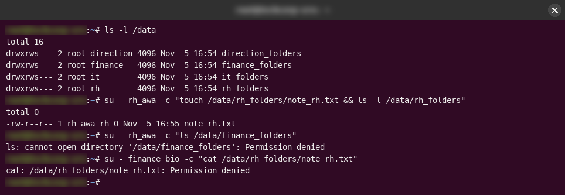
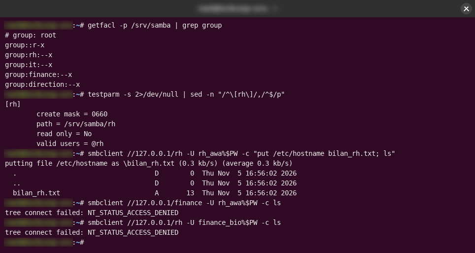

Administration Linux · contrôle d'accès
Un serveur de fichiers cloisonné par service, des groupes Unix à Samba
Quatre services, sept comptes d'employés, et une règle simple : chaque équipe ne voit que ses propres fichiers. Je l'ai construit avec des groupes Unix et des ACL, automatisé avec un script Bash qu'on peut relancer sans risque, partagé sur le réseau avec Samba, et j'ai testé chaque accès avec de vrais comptes d'employés.
- Période
- Août 2026
- Statut
- Terminé · laboratoire de stage
- Type
- Projet de stage
Contexte
Deuxième projet du volet système de mon stage chez FusionSoft Labs : un serveur de fichiers pour « TechCorp », une entreprise fictive avec RH, IT, Finance et Direction, construit dans un laboratoire conteneurisé isolé.
Problème
Chaque service doit accéder à ses propres documents et à un espace commun, et à rien d'autre. L'installation devait aussi être reproductible : retaper les mêmes sept commandes par service avait déjà produit de vraies erreurs.
Objectif
Le moindre privilège sur le disque, les mêmes garanties à travers le réseau, et un script d'installation que l'on peut relancer sans risque.
Architecture
- Un groupe Unix et un dossier par service, en mode 770 avec le bit SGID, plus un dossier commun accessible via un groupe secondaire partagé.
- Des ACL POSIX sur le dossier parent donnent à chaque service uniquement le droit de traversée (x).
- Un script Bash idempotent à trois fonctions (créer le service, créer les utilisateurs, préparer les dossiers) qui vérifie l'état existant avant d'agir.
- Des partages Samba sous /srv (selon la norme FHS), un par groupe : valid users = @groupe, create mask 0660, configuration validée avec testparm.



Ce que j’ai fait
- Construction du modèle à la main d'abord, puis remplacement de la répétition par un script. Les employés sont stockés sous la forme utilisateur:groupe et découpés par expansion de paramètres Bash, sans commande externe.
- Correction de vrais bugs en cours de route : un test qui exécutait une variable au lieu de l'évaluer ; useradd qui échouait en silence pendant que le script affichait « créé » (corrigé en testant le code de sortie) ; une comparaison faite contre la ligne getent entière au lieu de son premier champ.
- Ouverture au réseau avec Samba : un compte système et un compte Samba distinct par employé, créés en boucle.
- Tous les tests faits avec le vrai compte de chaque employé, jamais en root.
Ce qui a coincé, et comment je l’ai résolu
- Un utilisateur correctement configuré se voyait quand même refuser l'accès à son propre dossier. La cause était le dossier parent : atteindre un fichier exige le droit de traversée sur chaque dossier du chemin. Un dossier n'a qu'un seul groupe propriétaire, et « chmod o+x » aurait ouvert la traversée à tous les comptes du système, en violation du moindre privilège. Les ACL POSIX (setfacl -m g:<groupe>:x) ont résolu le problème sans changer le propriétaire.
- Le SGID garantit le groupe d'un nouveau fichier, pas son droit d'écriture. Avec l'umask par défaut 0022, les nouveaux fichiers étaient en -rw-r--r--. Un dossier d'équipe fonctionnel a besoin des deux réglages, et la persistance de l'umask passe par un fichier de profil ou par des ACL par défaut.
Comment je l’ai vérifié
Ce que je voulais prouver, le test que j’ai fait, et ce que j’ai réellement observé.
| Ce que je voulais prouver | Le test | Ce que j’ai observé |
|---|---|---|
| Le script est idempotent | Exécuté, puis relancé sans modification | Le second passage n'affiche que « existe déjà », sans erreur ni doublon |
| Les services sont isolés sur le disque | ls et cd testés séparément vers le dossier d'un autre service, avec un vrai compte employé | Refusé entre services · autorisé dans un même service et sur le dossier commun |
| L'isolation tient à travers le réseau | smbclient avec un employé RH : son partage, puis celui d'un autre service | Écriture confirmée sur RH · NT_STATUS_ACCESS_DENIED ailleurs |
| Les nouveaux fichiers ne sont pas modifiables par le groupe par défaut | Une employée RH crée un fichier dans le dossier RH | -rw-r--r-- : le groupe lit mais n'écrit pas (umask 022), le piège décrit plus haut |
Résultats
- Un serveur de fichiers où chaque accès autorisé fonctionne et chaque accès interdit échoue exactement là où il doit, en local comme en SMB.
- Un script de provisionnement réutilisable et idempotent, et une explication écrite de chaque choix de permission.
Ce que ça ne fait pas (encore)
- Un laboratoire en conteneur avec des comptes fictifs, pas l'annuaire d'une entreprise.
- Les identités sont locales ; il n'y a pas d'annuaire central (LDAP ou Active Directory).
- Dans le dépôt, la partie Samba est une compilation de commandes exécutées et validées une à une, pas un script original. Le README le précise.
Ce que j’améliorerais
- Des ACL par défaut pour que l'écriture de groupe ne dépende plus de l'umask de chacun
- Des identités centralisées avec Samba AD ou LDAP
- La journalisation des accès aux partages
Preuves
- Dépôt : script, configuration Samba, rapports github.com/AGRO-Rachidi/linux-permissions-multiservice